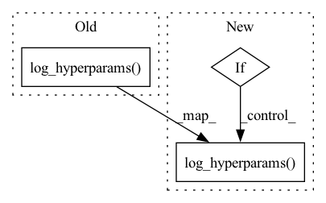

Pattern ID :507

Before Change
def on_train_start(self, trainer, pl_module):
logger = get_wandb_logger(trainer)
logger.log_hyperparams(
{
"splits_per_second": self.splits_per_second,
"tokens_per_second": self.tokens_per_second,
}
)
class SampleLogger(Callback):
def __init__(
After Change
def on_train_start(self, trainer, pl_module):
logger = get_wandb_logger(trainer)
if self.quantizer_type == "timewise":
logger.log_hyperparams(
{
"ticks_per_second": self.ticks_per_second,
"tokens_per_second": self.tokens_per_second,
}
)
else:
logger.log_hyperparams(
{
"splits_per_second": self.splits_per_second,
"tokens_per_second": self.tokens_per_second,
}
)
class SampleLogger(Callback):
def __init__(
In pattern: SUPERPATTERN
Frequency: 3
Non-data size: 3
Instances
Fragment ID: 2763374
Project Name: archinetai/audio-diffusion-pytorch-trainer
Commit Name: d95282a5569b4aecd3bd9a11e751ecf659093bde
Time: 2022-09-09
Author: flavio.schneider.97@gmail.com
File Name: main/module_diffqe.py
M Class Name: QuantizationInfoLogger
N Class Name: QuantizationInfoLogger
M Method Name: on_train_start(3)
N Method Name: on_train_start(3)
M Parent Class: Callback
N Parent Class: Callback
M File Name: main/module_diffqe.py
N File Name: main/module_diffqe.py
M Start Line: 352
M End Line: 357
N Start Line: 372
N End Line: 388
'>
Before Change
trainer: Trainer = hydra.utils.instantiate(config.trainer, logger=logger)
// Log hyperparameters
trainer.logger.log_hyperparams({"ckpt_path": config.ckpt_path})
log.info("Starting testing!")
trainer.test(model=model, datamodule=datamodule, ckpt_path=config.ckpt_path)
After Change
trainer: Trainer = hydra.utils.instantiate(config.trainer, logger=logger)
// Log hyperparameters
if trainer.logger:
trainer.logger.log_hyperparams({"ckpt_path": config.ckpt_path})
log.info("Starting testing!")
trainer.test(model=model, datamodule=datamodule, ckpt_path=config.ckpt_path)
'>
Fragment ID: 2763375
Project Name: ashleve/lightning-hydra-template
Commit Name: 108232c85c4337c3d3835aa332a8e7c0f84aa7bf
Time: 2022-04-07
Author: zalewski.ukas@gmail.com
File Name: src/testing_pipeline.py
M Class Name: AnonimousClass
N Class Name: AnonimousClass
M Method Name: test(1)
N Method Name: test(1)
M Parent Class:
N Parent Class:
M File Name: src/testing_pipeline.py
N File Name: src/testing_pipeline.py
M Start Line: 53
M End Line: 53
N Start Line: 50
N End Line: 56
'>
Before Change
// wandb logging
wandb_logger = WandbLogger(name=args.name, project=args.project)
wandb_logger.watch(model, log="gradients", log_freq=100)
wandb_logger.log_hyperparams(args)
callbacks = []
// lr logging
callbacks.append(LearningRateMonitor(logging_interval="epoch"))
After Change
callbacks = []
// wandb logging
if args.wandb:
wandb_logger = WandbLogger(
name=args.name, project=args.project, entity=args.entity, offline=args.offline
)
wandb_logger.watch(model, log="gradients", log_freq=100)
wandb_logger.log_hyperparams(args)
// lr logging
callbacks.append(LearningRateMonitor(logging_interval="epoch"))
// epoch checkpointer
'>
Fragment ID: 2763373
Project Name: vturrisi/contrastive-learning
Commit Name: c38d995fa647676d6c4afdbc8aa0c578b666e9a5
Time: 2021-05-06
Author: vt.turrisi@gmail.com
File Name: main_contrastive.py
M Class Name: AnonimousClass
N Class Name: AnonimousClass
M Method Name: main(0)
N Method Name: main(0)
M Parent Class:
N Parent Class:
M File Name: main_contrastive.py
N File Name: main_contrastive.py
M Start Line: 192
M End Line: 253
N Start Line: 191
N End Line: 276